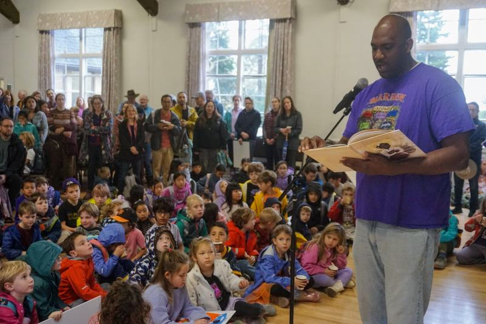
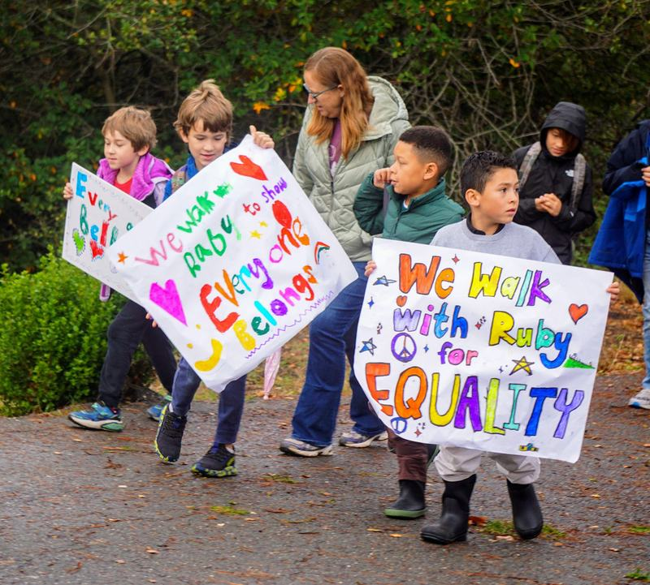
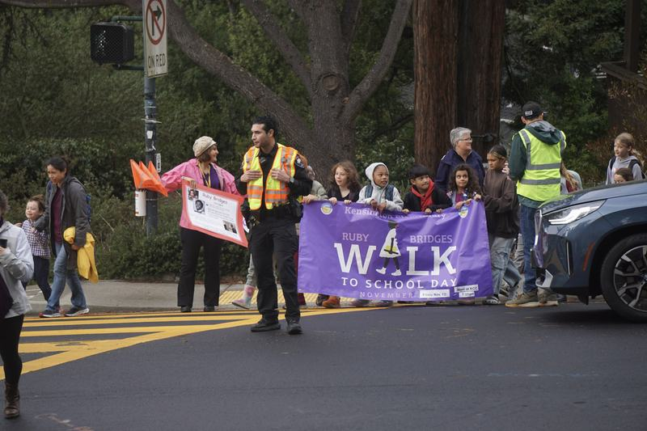
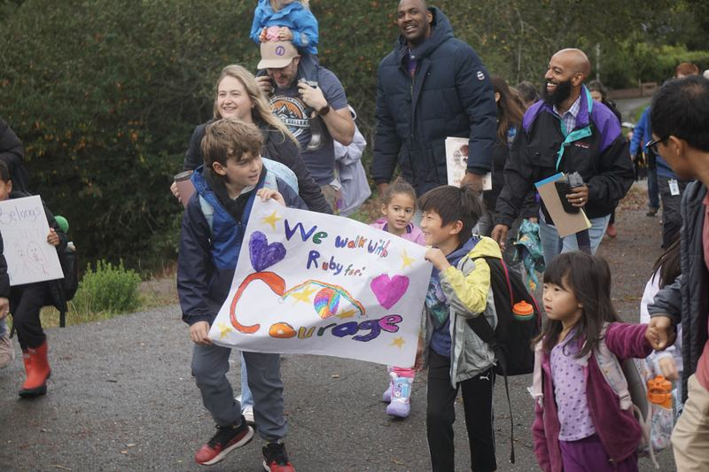

Working together for every child at Kensington.
We are parents and caregivers who make up Kensington Elementary's African American Parent Advisory Council. We support one another's children, welcome new families, and work alongside the principal and staff so the school hears from Black families early.
Share your ideasSign up for updates
- Follows the district's AAPAC model
- Four meetings with the principal this year
- Open to every family
Week of November 23, 2026
What we did, what comes next, and why
We post a short update here each week so any family can see where things stand without having been in the room.
What comes next
- Mon, Dec 7A family playdateWhyOur kids are few, and they are spread across many classrooms. Time together matters as much as any meeting.
- Mon, Dec 14Our first meeting with the principalWhyWest Contra Costa Unified asks each school's AAPAC to meet through the year and advise the principal and the School Site Council. We want Black families' experiences heard before decisions are made. The agenda goes up here a week ahead, and a short summary within a week after.
- Now through FebruaryPlanning Black History MonthWhyGood guest readers, artists and assemblies book months ahead. We want February shaped by families, so we are asking for ideas first.
- OngoingFollowing through on campus safety, and on the harm itselfWhyAt the town hall, families asked the district for a decision, a timeline and a written plan for the campus. Families have also asked that the people most affected stay at the center. We are pursuing both, with the district and alongside other Kensington parents.
- Next: Thu, Dec 10Showing up at public meetingsWhyDecisions about our campus and our neighborhood are made at the school board and the community services district. Both take public comment.
What we did
- Nov 21Opened a short form for Black History Month ideas and volunteers. Share yours.
- Nov 20Families chose Monday, December 7 for our next playdate.
- Nov 19Principal Jordan confirmed four AAPAC meetings for this school year.
- Nov 17The district held a town hall on October's incident and campus safety. Watch the recording.
- Nov 13Students, families, neighbors and local leaders walked up the hill together for the Ruby Bridges Walk. See the photos.
- Nov 12Families spoke at the community services district board meeting.
- Oct 23Met with the district's school climate team.
- Oct 21Met with Principal Jordan and gave her families' questions in writing.
- Oct 18Marched in the Kensington Parade with our banner.
Dates
Meetings worth putting on your calendar
Get every AAPAC date on your calendar. Subscribe once and new dates appear on their own.
AAPAC
- Mon, Dec 7 · 4:00 PMFamily playdateKids play, grown-ups connect. Details go to AAPAC families, and anyone is welcome to write to us for them.
- Mon, Dec 14 · 4:00 to 5:00 PMAAPAC meeting with Principal JordanAt Kensington Elementary. Details go to AAPAC families by email.
- Mondays · 4:00 to 5:00 PMThree more meetings with the principalJanuary 25, March 15 and May 10, at Kensington Elementary.
Public meetings
- Thu, Dec 10 · 7:00 PMKensington Community Services District boardKensington Community Center, 59 Arlington Avenue, or Zoom. This board oversees Kensington Police and the park beside our school, and it meets on the second Thursday of each month. Agendas and Zoom links.Add to calendar: Google · Apple or Outlook
- Evenings · 6:30 PMWest Contra Costa Unified Board of EducationLovonya DeJean Middle School, 3400 Macdonald Avenue, Richmond. Anyone may speak during public comment. Dates and agendas are on the district's site.
Agendas and notes, 2026-27
We post each meeting's agenda here the week before and a short summary within a week after, so families who can't be there still know what was discussed and decided.
- Mon, Dec 14Agenda by Dec 7Notes by Dec 21
- Mon, Jan 25Agenda by Jan 18Notes by Feb 1
- Mon, Mar 15Agenda by Mar 8Notes by Mar 22
- Mon, May 10Agenda by May 3Notes by May 17
If childcare, a ride or interpretation would help you take part, tell us and we will work on it.
February 2027
Black History Month, planned with families
We are starting early so February belongs to the whole school. Nothing is booked yet. These are the ideas on the table, and we will bring families' thoughts to Principal Jordan in December.
This year's national themeFrom Black Print Culture to Digital Blackness
- A read-in with guest readersNeighbors, elders and local leaders reading in classrooms.
- A visiting author or artistSomeone our students can meet, question and learn from.
- Music and danceAn assembly that gets every grade moving.
- Students as publishersStudent writing and art on the theme, shared with the community.
- A family outingOakland's Black Joy Parade, Sunday, February 28, at noon.
- Your ideaTell us what would make the month meaningful for your child.
How February comes together
- NowFamilies share ideas and offer to help.
- Mon, Dec 14We bring families' ideas to Principal Jordan.
- JanuaryWe line up readers, guests and volunteers.
- FebruaryBlack History Month at Kensington.
November 13, 2026
The Ruby Bridges Walk
On November 14, 1960, six-year-old Ruby Bridges walked into a school in New Orleans that had never admitted a Black child. This year our students walked up the hill together in her honor, with families, neighbors and local leaders beside them.









Photos by Ittai Shiu. Tap a photo to see it larger. If you would like a photo of your child removed, write to us and we will take it down the same day.
Our hope is that every child at Kensington, including every Black child, feels known, safe and proud at school.
About
What AAPAC is
AAPAC is Kensington Elementary's African American Parent Advisory Council. It follows West Contra Costa Unified's model: parents and caregivers, with school staff, who advise the principal and the School Site Council on how Black students are doing and what would help.
- Who we areParents, caregivers, grandparents, staff and neighbors. We center Black, African, Caribbean and multiracial students and their families, and everyone who shares that commitment is welcome.
- Who leadsHisham Ali Bob and Faith Agyekum, co-presidents, both Kensington parents.
- Who we work withPrincipal Kim Jordan and the school staff, the PTA, the Kensington Education Foundation and the Culture and Community Coalition.
Do I have to be Black to take part?
No. AAPAC centers Black students and families, and parents of every background take part. Anyone who shares that commitment is welcome.
Is AAPAC part of the PTA?
No. AAPAC is the school's African American parent advisory council, following West Contra Costa Unified's model. We work closely with the PTA, the Kensington Education Foundation and the Culture and Community Coalition, and we bring Black families' perspectives to that work.
How much time does it take?
As much as you have. There are four meetings with the principal each year, plus playdates and events. Coming once still helps.
Can I share a concern privately?
Yes. Write to us at hello@kensingtonaapac.org. We keep what you share private unless you ask us to raise it, and we never name children.
Who decides what AAPAC says?
Families do. We decide public positions together, and both co-presidents approve anything AAPAC says publicly.
Get help
If something happens to your child
Tell the principal, and let us know. We will help you think through next steps.
- Someone is in dangerEmergencyCall 911
- Report a hate incident near schoolKensington Police, non-emergency(510) 525‑7573
- Racial harassment or discrimination at schoolWCCUSD Office of Educational Equity(510) 231‑1118
- Federal civil rights complaint about a schoolU.S. Department of Education, Office for Civil Rights(800) 421‑3481
- Discrimination at work or in housingCalifornia Civil Rights Department(800) 884‑1684
- Find local help and referralsFree call, 24 hours a dayCall 211
Do you know something about October 16 to 19?
The investigation into the slur found on a school wall is still open. If you saw anything, heard someone talk about it, or have doorbell, home or car camera footage from Friday, October 16, through Monday morning, October 19, call Kensington Police at (510) 525‑7573 and give Case No. 2026-0230. Tips can be anonymous.